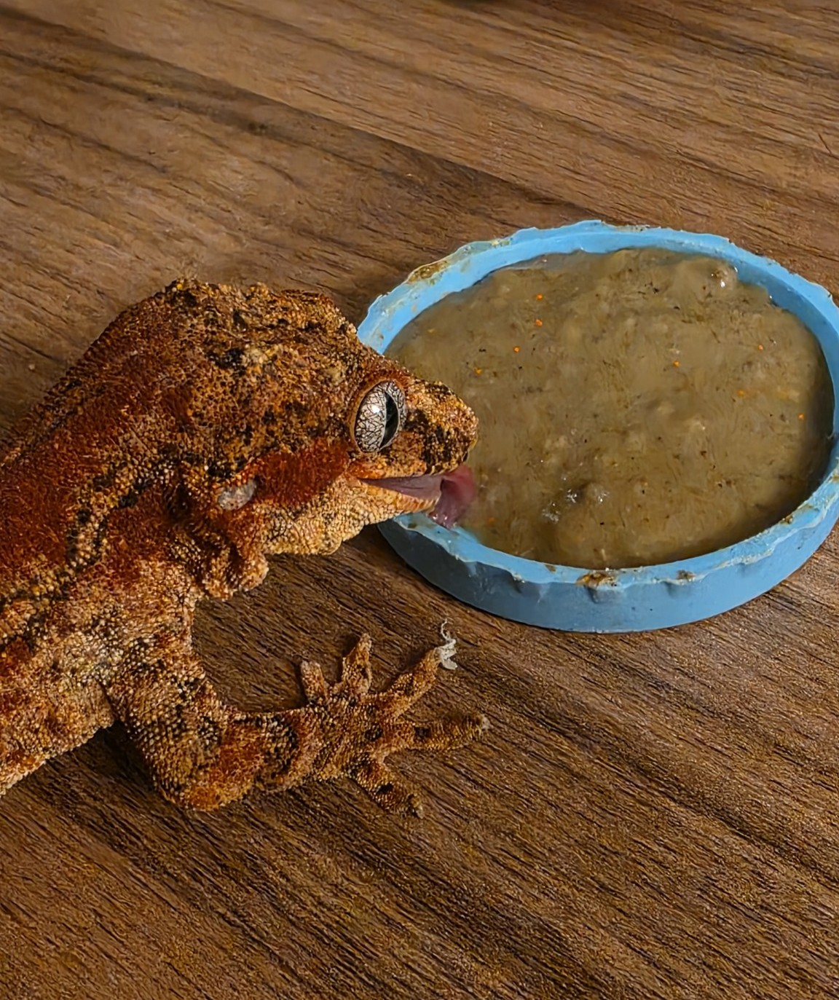
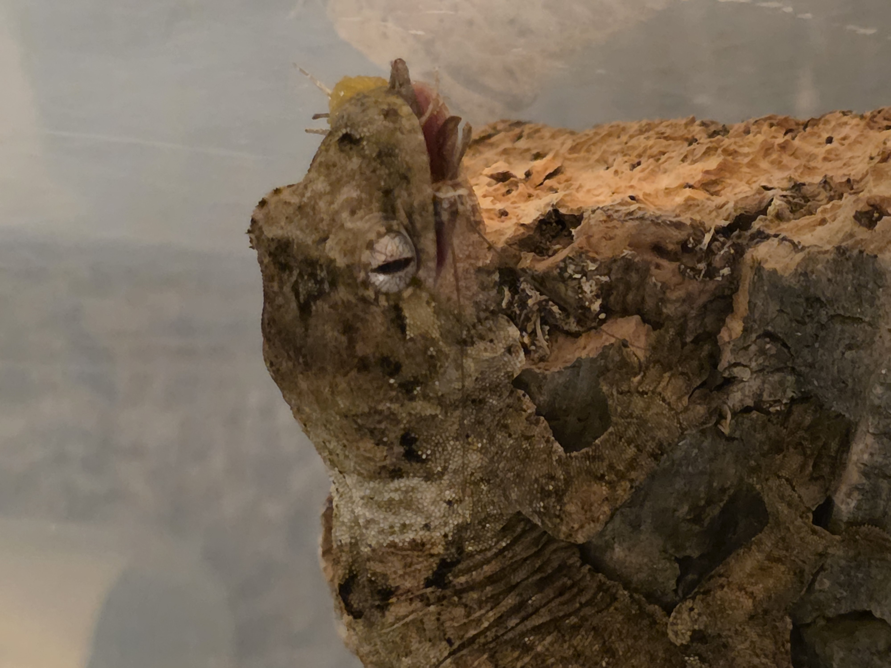
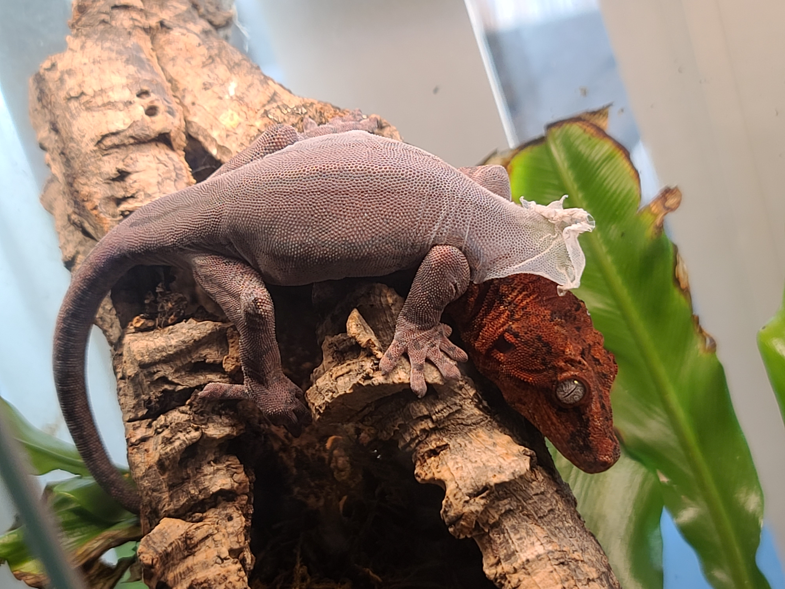
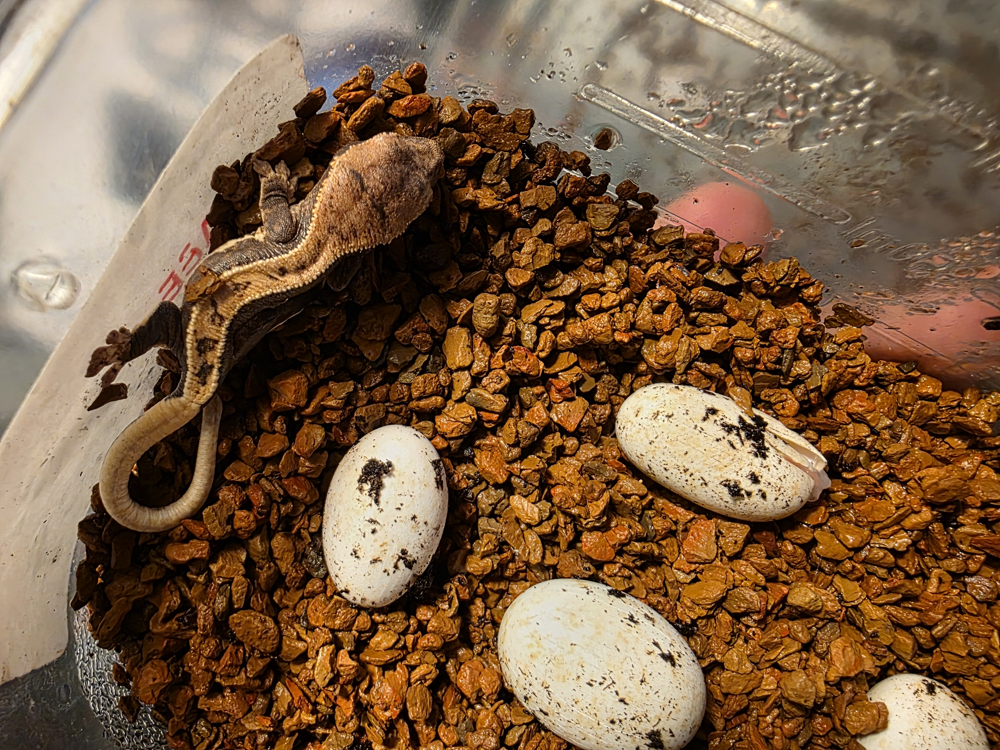
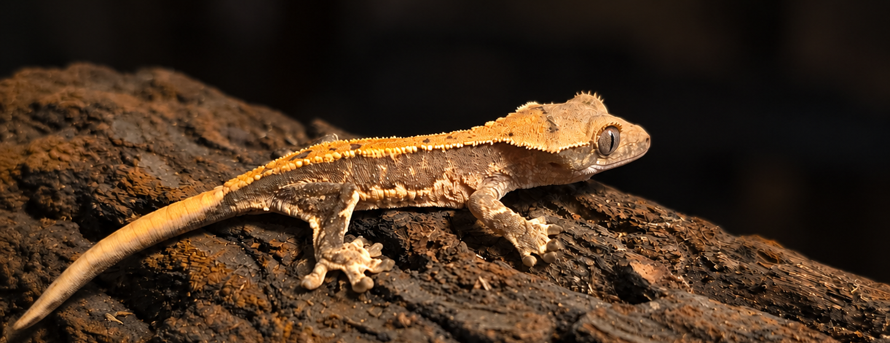

Additional Care Information
Though many reptiles require specific conditions when it comes to their care, such as heating, humidity, and enclosure size, many reptiles share similarities in what they experience sa they live and grow. Here are some common aspects of reptile care that owners should understand.
Feeding and Schedules

Reptiles encompass a broad array of animals with different
dietary needs. Some reptiles primarily eat insects and are
called insectivores. Others are carnivores, herbivores,
omnivores, or frugivores (animals that eat fruit). somespecies
may fall into multiple categories depending on their age and
natural diet.
For insect-eating reptiles, feeding live insects can provide
enrichment by encouraging natural hunting behaviors. however,
it is important to understand your pet's dietary requirements.
There are many commercially available diets tailored to different
reptile species, including powdered diets and prepared foods.
Some reptile species, including powdered diets are prepared
foods. Some reptiles can also eat specifically formulated gel
diets. For carnivoous reptiles that normally consume rodents,
commercially prepared alternatives, such as reptile sausages,
may be available for certain species. However, these alternatives
should only be used when they provide appropriate nutrition
for the animal.

Supplements
Just like humans, reptiles require certain vitamins and minerals
to remain healthy. Depending on the species and its diet, supplements
may be necessary when keeping reptiles in captivity. Calcium and
multivitamin powders are among the most commonly recommended supplements.
Calcium supplements are available with or without vitamin D3,
which helps reptiles absorb and use calcium.
The Frequency of supplementation is species dependent. Age, diet, and
access to UVB lighting should also be taken into consideration. Some
reptiles require more frequent calcium supplementation, while others
receive sufficient nutrients from commercially prepared diets. Providing
appropriate calcium, vitamin D3, and UVB exposure helps support
healthy bone development and reduces the risk of metabolic bone
disease (MBD). However, excessive supplementation can also cause
health issues, so it is important to follow species-specific recommendations.
Shedding

All reptiles shed their outer layer of skin as they grow. Unlike
humans, whose skin continuously renews itself through the gradual
shedding of individual cells, reptiles periodically shed portions
of larger sections of their outer skin. Some reptiles, such as geckos
and snakes, may shed their skin in large pieces, while otehrs, such
as bearded dragons, shed in smaller patches.
It is important to provice appropriate humidity and environmental
conditions to help your reptile shed properly. Even though reptiles
inhabig different environments, many species benefit from access to
a humid area during shedding. For example, bearded dragons require
warmer basking tempteratures and generally lower ambient humidity
than many tropical geckos. However, both can benefit from appropriate
hydration and access to suitable shedding surfaces or humid retreats
when needed. These conditions help loosen old skin and reduce the risk
of retained shed, which can cause problems around the toes, tail,
and eyes.
Eggs and Egg Care

Although some reptiles give birth to live young, many species
reproduce by laying eggs. Dependong on the species, these eggs are
often deposited in protected locations with suitable temperature and
moisture conditions.
For egg-laying reptiles, it is important to provide an appropriate
nesting area or lay box when females are ready to lay eggs.
Some females can produce infertile eggs even without being paired
with a male. Egg production also requires significant amounts of
calcium, making proper nutrition and supplementation especially
important for breeding females.
Reptile eggs can be incubated using different types of media,
including sphagnum moss, vermiculite, peat moss, and specialized
clay-based incubation substrates. However, the appropriate incubation
medium, temperature, and moisture levels depend on the species.
Some eggs are sensitive to changes in position after laying,
so it is important to research the correct incubation methods
before handling any eggs you find.
Hatchling Care

The youngest members of any species are often the most vulnerable
and reptiles are no exception. Although many reptiles are capable
of defending themselves and surviving independently shortly after
hatching, they are still sensitive to their surrounding environment.
Hatchlings may shed frequently as they grow, making appropriate
humidity, hydration, and enclosure conditions expecially important.
Inadequate environmental conditions can lead to retained shed,
dehydration, and other health complications.
Feeding schedules also vary depending on the species. Many young
insect-eating reptiles benefit from frequent feeding to support
their rapid growth, while other species may require less frequent
meals. Providing an appropriately sized enclosure, suitable food,
proper temperatures, and access to water help give Hatchlingsthe best
chance of growing into healthy adults.